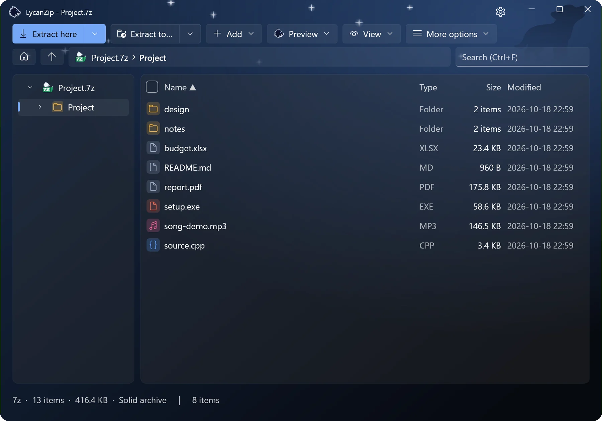
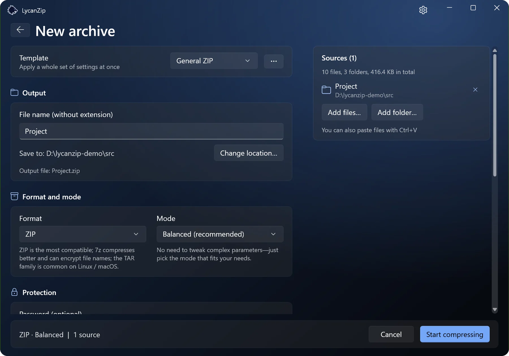
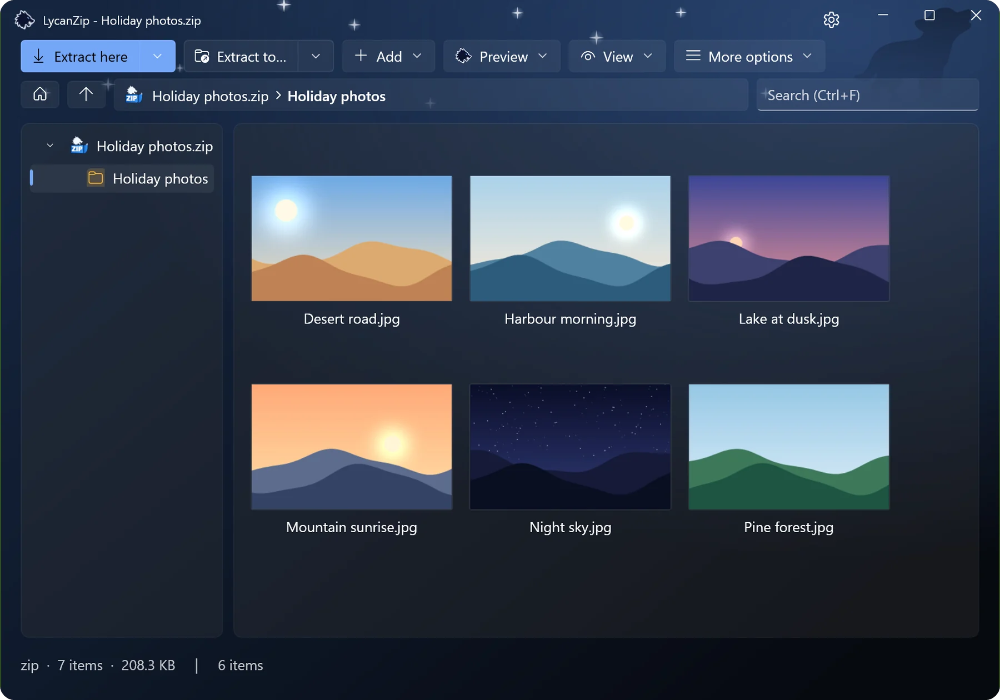
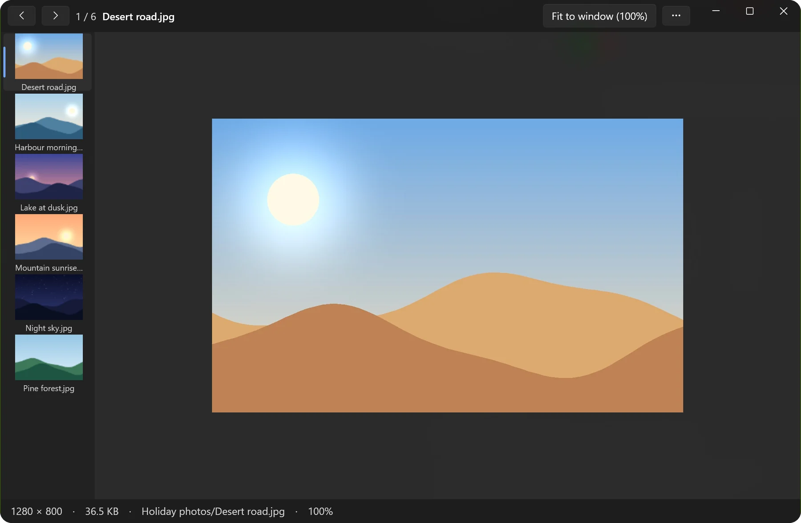
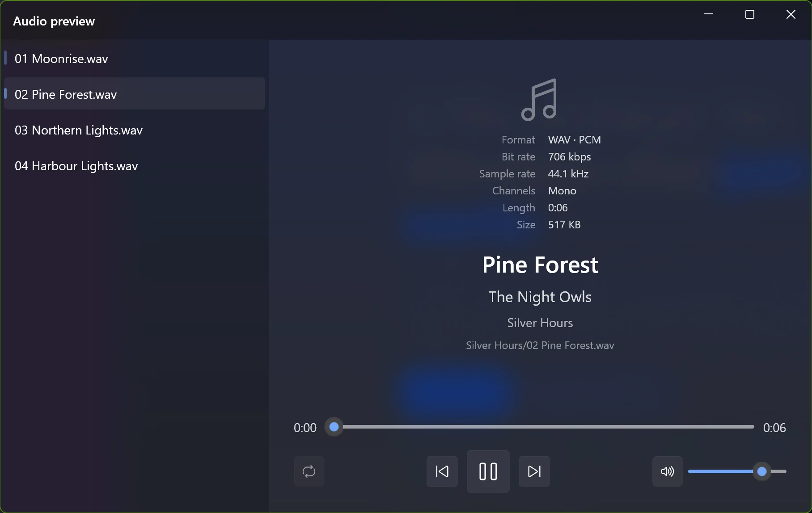
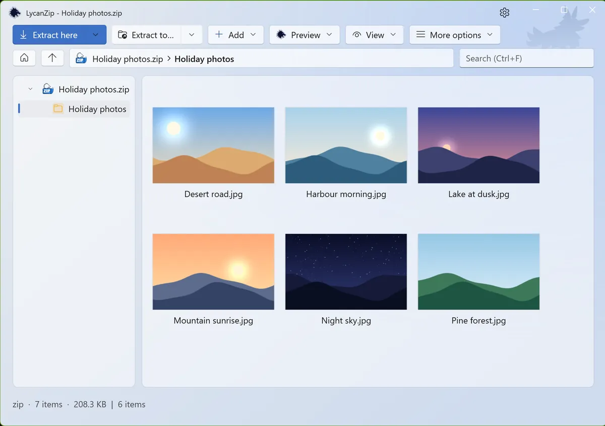
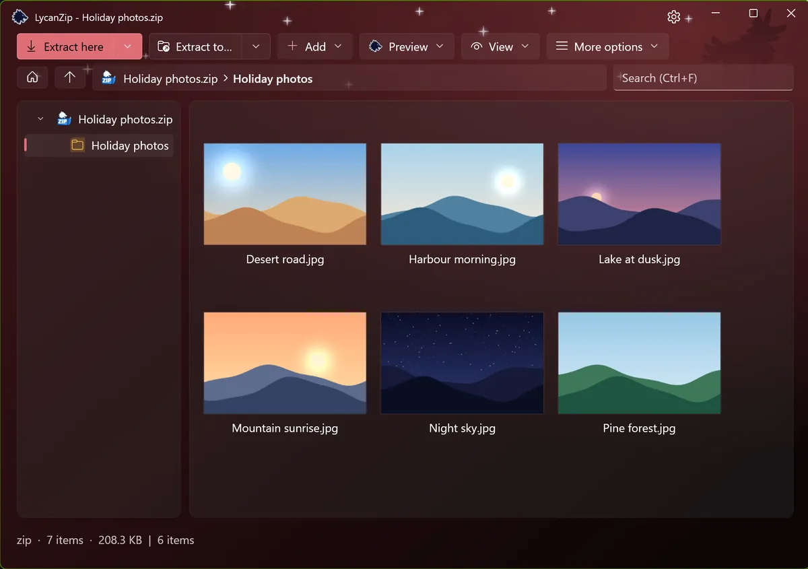
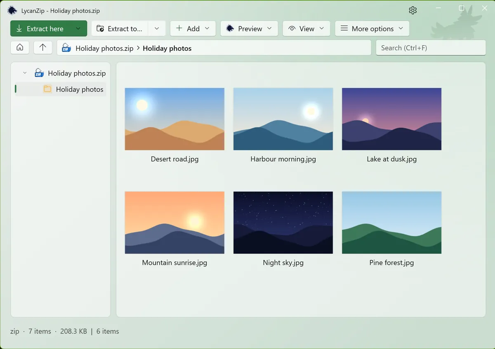
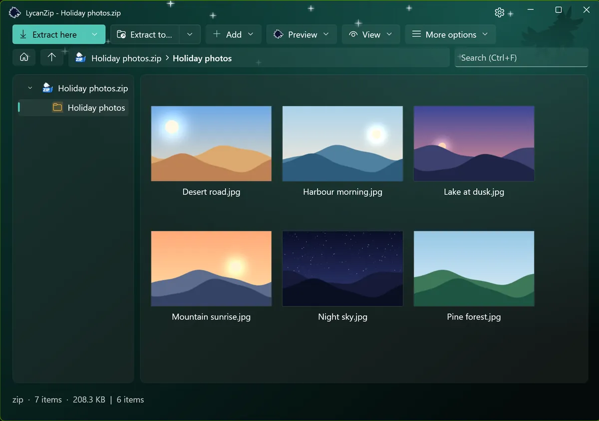

Open zip, 7z, rar, tar, iso and dozens more. Create zip, 7z and tar with AES-256 passwords. Browse, search, drag files out to Explorer, use the right-click menu. It works like the rest of Windows.

A folder tree and a details list.

Making an archive: a format and a mode.
The Windows 11 right-click menu Store version only
Entries right in the top level of the Windows 11 menu, no “Show more options” first. Windows only allows this for a signed package, so it comes with the Microsoft Store version. The other versions use the classic menu.
Look before you unpack: pictures and music
Pictures open in a viewer with a thumbnail strip, zoom and animations. Music plays in a built-in player that shows the tags. Nothing is unpacked. Hold Shift when you open an archive to go straight to the pictures.

The pictures of an archive as thumbnails.

The picture preview.

The audio preview.
Dark, light, your colour
Light or dark, six accent colours, or just follow Windows. Optional sound effects (two sets) and animations, which you can switch off.

Light · Moonlight

Dark · Blood Moon

Light · Forest

Dark · Aurora
Change an archive in place
Add, delete, rename, replace inside zip, 7z and tar, or edit a file in your own editor and save it back. Done on a safe copy.
File names come out right
Old zip files with Big5, GBK, Shift-JIS or EUC-KR names are detected automatically.
Safe by design
No telemetry, no ads, nothing collected. And three ways to check what you are about to open:
Antivirus scan
Scan an archive with your own antivirus through Windows AMSI, without unpacking it to disk.
SHA-256 check
Hash any file, folder or archive. Verify a .sha256 file with a double click.
VirusTotal lookup
One click opens the VirusTotal page of the file’s hash. Only the hash is sent, never the file.
Unsafe paths are refused, links are not followed, and compression bombs are caught.
Small, honest and open
Free and open source
MIT license, source on GitHub. No ads, no accounts.